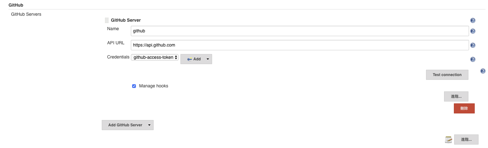
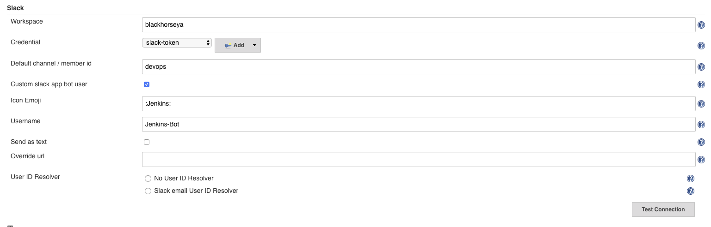
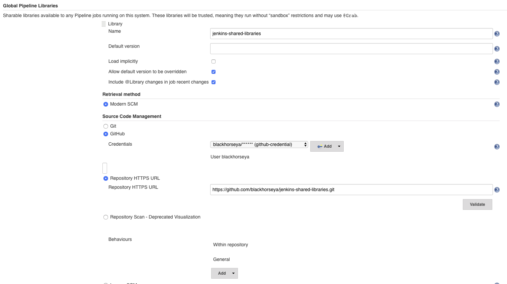
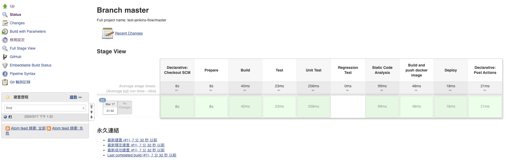

- 本文基於
Kubernets、Helm 3 安裝 Jenkins 並自動啟動 Slave
前置條件
安裝
這裡使用 Stable/Jenkins helm chart 安裝
1
| helm --namespace jenkins upgrade --install jenkins stable/jenkins
|
配置
alues.yaml
完整配置參考
1
2
3
4
5
6
7
8
9
10
11
12
13
14
15
16
17
18
19
20
21
22
23
24
| master:
adminUser: 'admin'
adminPassword: 'admin'
slaveKubernetesNamespace: 'jenkins'
installPlugins:
- kubernetes:latest
- workflow-job:latest
- workflow-aggregator:latest
- credentials-binding:latest
- git:latest
- pipeline-github:latest
- slack:latest
- embeddable-build-status:latest
- ssh-agent:latest
JCasC:
enabled: false
|
設定
Github Server
如果有使用 Multibranch pipeline 要設定，這樣才會自動註冊 Webhook
很重要

Slack Notify
如果要使用 Slack 發送消息

Shared Library
可以將一些共用的 Method，拉出來變成一個 Library，再導入進來

使用
建立 pipeline
Jenkinsfile Declarative, 詳細語法參考
完整範例
1
2
3
4
5
6
7
8
9
10
11
12
13
14
15
16
17
18
19
20
21
22
23
24
25
26
27
28
29
30
31
32
33
34
35
36
37
38
39
40
41
42
43
44
45
46
47
48
49
50
51
52
53
54
55
56
57
58
59
60
61
62
63
64
65
66
67
68
69
70
71
72
73
74
75
76
77
78
79
80
81
82
83
84
85
86
87
88
89
90
91
92
93
94
95
96
97
98
99
100
101
102
103
104
105
106
107
108
109
110
111
112
113
114
115
116
117
118
119
120
121
122
123
124
125
126
127
128
129
130
131
132
133
134
135
136
137
138
139
140
141
142
143
144
145
146
147
148
149
150
151
152
153
154
155
156
157
158
159
160
161
162
163
164
165
166
167
168
169
170
171
172
173
174
175
176
177
178
179
180
181
182
183
184
185
186
187
188
189
190
191
192
193
194
195
| #!/usr/bin/env groovy
pipeline {
options {
buildDiscarder(logRotator(numToKeepStr: '5'))
preserveStashes(buildCount: 5)
disableConcurrentBuilds()
parallelsAlwaysFailFast()
}
parameters {
booleanParam(name: 'DEBUG_BUILD', defaultValue: true, description: 'if true, never create release')
text(name: 'RELEASE_NOTE', defaultValue: """
### feature
- new feature 1
### fix
- modify config
""", description: '')
}
triggers {
pollSCM('H H(20-21) * * *')
}
environment {
APP_NAME = "test-jenkins-pipeline"
VERSION = "1.0.0"
FULL_VERSION = "${VERSION}.${BUILD_ID}"
}
agent {
kubernetes {
yaml """
apiVersion: v1
kind: Pod
spec:
containers:
- name: builder
image: blackhorseya/dotnet-builder:3.1-alpine
command: ['cat']
tty: true
- name: docker
image: docker:latest
command: ['cat']
tty: true
volumeMounts:
- name: dockersock
mountPath: /var/run/docker.sock
- name: helm
image: alpine/helm:3.1.0
command: ['cat']
tty: true
volumes:
- name: dockersock
hostPath:
path: /var/run/docker.sock
"""
}
}
stages {
stage('Prepare') {
steps {
script {
def causes = currentBuild.getBuildCauses()
echo "causes: ${causes}"
def commitChangeset = sh(
label: "get changeset",
returnStdout: true,
script: 'git diff-tree --no-commit-id --name-status -r HEAD'
).trim()
echo "changeset: ${commitChangeset}"
}
sh label: "print all environment variable", script: """
printenv | sort
"""
container('builder') {
sh label: "print dotnet info", script: """
dotnet --info
"""
}
container('docker') {
sh label: "print docker info and version", script: """
docker info
docker version
"""
}
container('helm') {
script {
sh label: "print helm info", script: """
helm version
"""
}
}
}
}
stage('Build') {
steps {
container('builder') {
echo "dotnet build"
}
}
}
stage('Test') {
parallel {
stage('Unit Test') {
steps {
container('builder') {
echo "dotnet test"
}
}
}
stage('Regression Test') {
when {
branch 'release/*'
triggeredBy cause: "UserIdCause"
expression { return !params.DEBUG_BUILD }
}
steps {
container('builder') {
echo "regression test success"
}
}
}
}
}
stage('Static Code Analysis') {
when {
anyOf {
allOf {
branch 'develop'
triggeredBy 'SCMTrigger'
}
allOf {
triggeredBy cause: "UserIdCause"
}
}
}
steps {
echo "static code analysis"
}
}
stage('Build and push docker image') {
when {
anyOf {
allOf {
branch 'develop'
triggeredBy 'SCMTrigger'
}
allOf {
triggeredBy cause: "UserIdCause"
}
}
}
steps {
container('docker') {
echo "docker build and push image"
}
}
}
stage("Deploy") {
when {
anyOf {
allOf {
branch 'develop'
triggeredBy 'SCMTrigger'
}
allOf {
triggeredBy cause: "UserIdCause"
}
}
}
steps {
container('helm') {
echo "deploy to env"
}
}
}
}
post {
always {
echo "done"
}
}
}
|
結果
